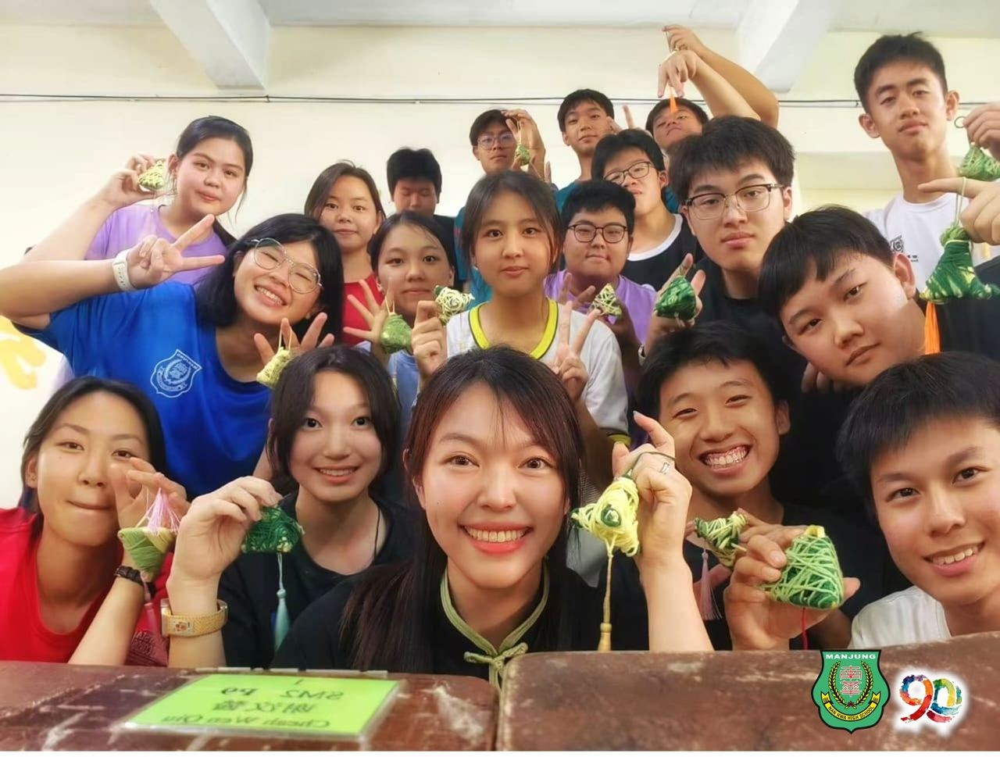
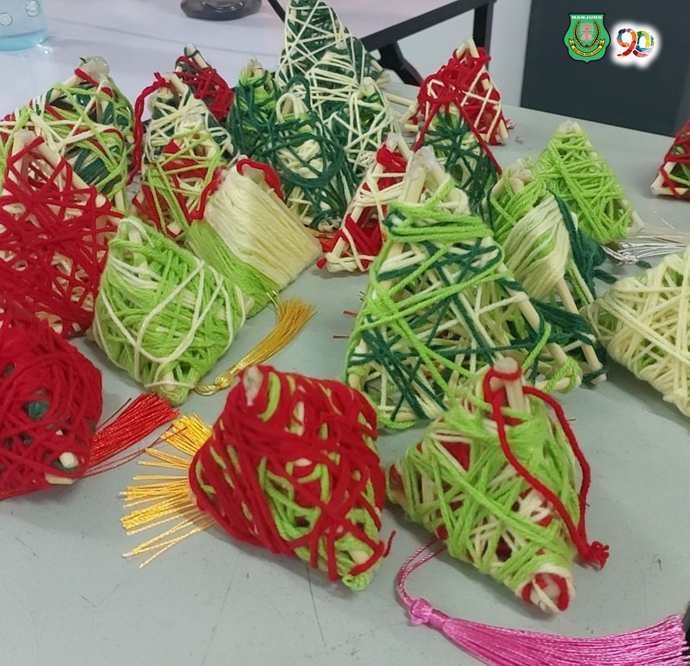
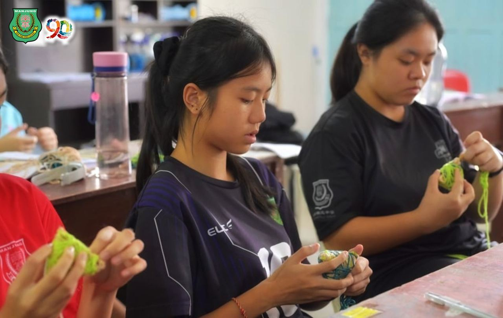
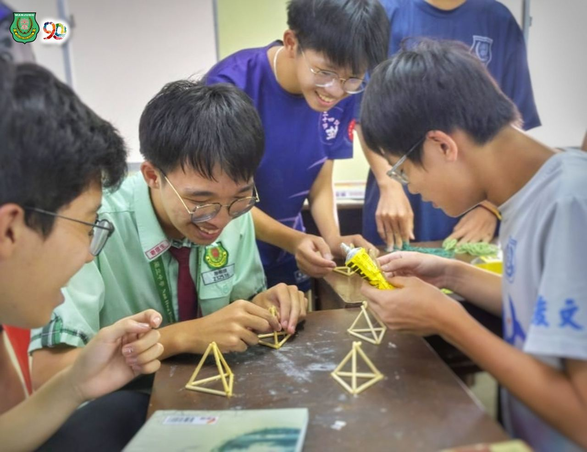
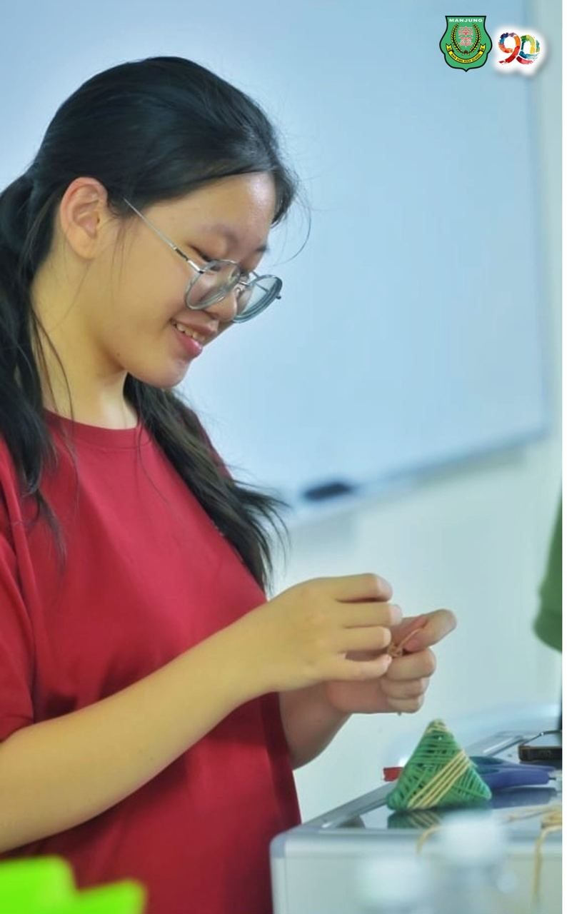
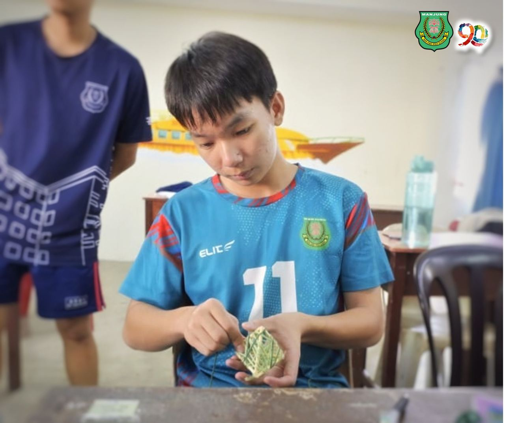
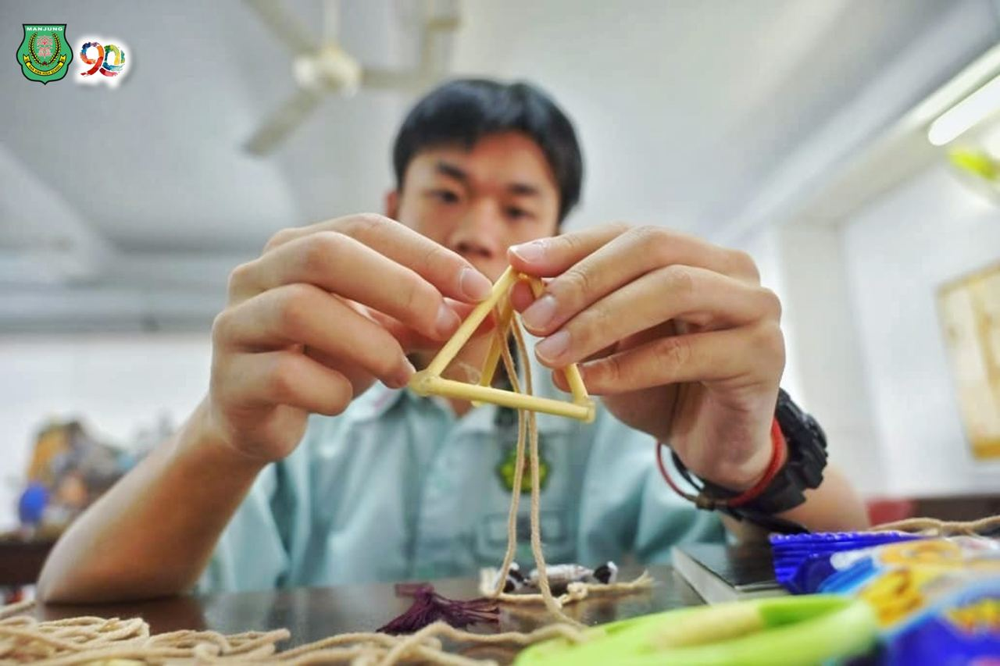

🎋 端午惊喜快闪🎋
🎋 端午惊喜快闪🎋
当传统端午撞上创意手作，这抹校园温馨，你愿意收下吗？❤
由本校 联课处 精心策划的端午节快闪活动🏫突袭校园，在紧凑的课业📚间隙中，为全体师生带来了一场轻松不乏温馨✌️的节日体验！
活动现场，由同学们亲手制作的🎋“毛线粽子”悄然亮相。🎊五彩斑斓的彩线缠绕出传统的祝愿，下端点缀的装饰流苏在风中轻轻摇曳🎐 刹那间一扫教室平日的沉闷气氛，为校园注入了满满的青春活力与生机☀️。
当古老的传统习俗遇到现代的校园巧思，南华独中校园里的 书香与“粽香”交织成独特的风味。这不仅是一次文化的指尖传承，更是一段专属南华人的温情记忆。
👀 快来看看现场捕捉到的温馨画面：
👉 欢迎大家在下方留言，📷晒出属于你专属端午温馨时光，一起为南华创意点赞👍！
#南华独中 #SekolahTinggiNanHwa #端午安康 #联课创意 #校园快闪 #毛线粽子 #手作传承 #书香粽香






